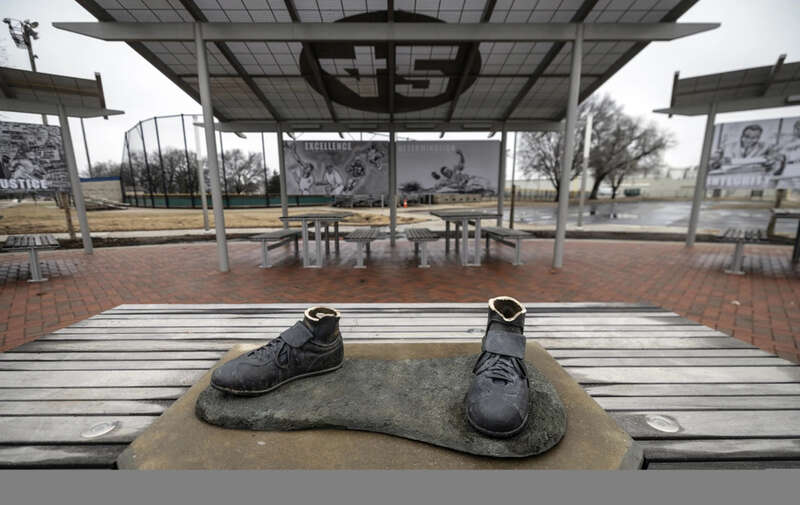
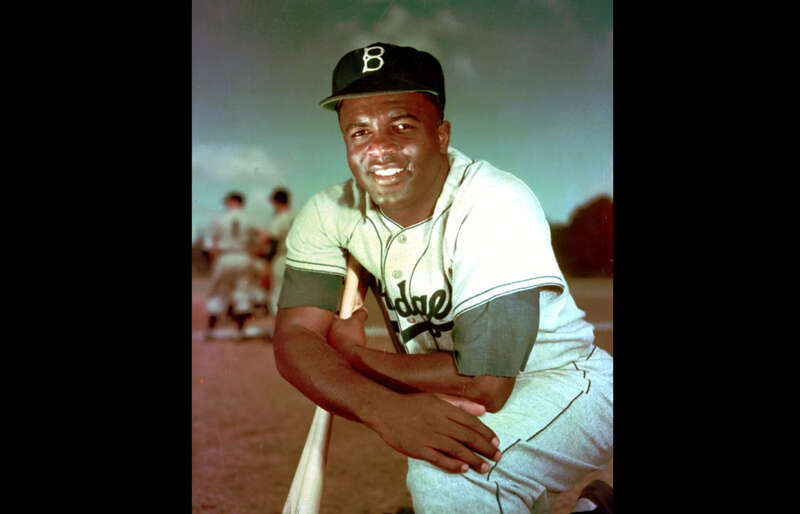
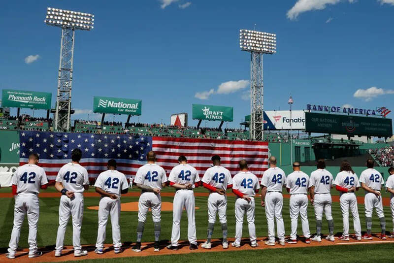

在堪萨斯棒球纪念公园的罗宾森铜像，在去年被人破坏后盗窃，现已破案。 (图/美联社)
去年，美国堪萨斯州一个城市公园里的杰基·罗宾森(Jackie Robinson)铜像被偷走，铜像只剩脚踝，几天铜像被发现丢进垃圾桶里焚烧。现在此案终于侦破，一名男子因吸食兴奋剂而神智不清的行为，此人被判处15年徒刑。罗宾森是美国职棒大联盟第1位黑人球员，而且极为表现出色，被视为黑人平权运动的重要人物。
美联社报导，犯案者名叫瑞奇·阿尔德雷特 (Ricky Alderete)，被控以3项盗窃案，罗宾森铜像是其中一件。他在法庭上表示自己非常后悔，而犯案原因是他对芬太尼(fentanyl)成瘾。
芬太尼是一种强效的类鸦片止痛剂，止痛效力比吗啡高50至100倍，常用于手术麻醉、癌症末期病患、重度疼痛、慢性顽固性疼痛。 1990年后，芬太尼的滥用，逐渐成为美国与墨西哥的严重社会问题。

罗宾森在大联盟的奋斗历史，成为美国黑人的榜样人物。 (图/美联社)·阿尔德雷特坦承犯刑，他说：「我让芬太尼控制了我，做出了很多糟糕的事件，不过我从来没有想过要伤害任何人。我对我的行为感到尴尬又羞愧。无论法官怎么处份我，我都会接受。因为按照我现在堕落的速度，我很快就会把自己弄死。」
原雕像被偷走后，替换雕像的捐款纷至沓来，其中美国职棒大联盟一口气就捐出10 万美元，所以新铜像也快也就做好了，将在下星期一揭幕，并请到台湾球迷也相当熟悉的前纽约洋基队主教练托瑞(Joseph Torre)，与赛扬奖得主「沙胖」沙巴西亚( CC Sabathia)，共同出席周一的揭幕仪式。
至于被毁的雕像，剩下的球鞋底座现在陈列在堪萨斯城的黑人联盟棒球博物馆，也算是另类的馆藏了。

4月15日是罗宾森首次在大联盟比赛的日子，被定为罗宾森日。当天比赛的1大联盟球员都穿42号做为最高规格的纪念。 (图/美联社)在加入布鲁克林道奇队之前，罗宾森曾效力于黑人联盟堪萨斯城君主队，为几代美国黑人棒球运动员铺平了道路。之后被道奇队总经理布兰奇·瑞基看重，请他来道奇队打球，球衣背号42。
为回报瑞基的知遇之恩，罗宾森表现非常积极，在9年的大联盟生涯期间，创下了生涯打击.311、全垒打137支、打点734分、盗垒成功197次的高水准成积，他不仅被认为是体育传奇人物，而且也是民权运动偶像，在他退役后，1972年6月4日，道奇球团将他的球衣背号42号跟着退役，是第一个跟着球员而退役的背号。
2009年，每年4月15日的「杰基罗宾森日」，大联盟每一位球员都穿都穿42号球衣，是对他的致敬。